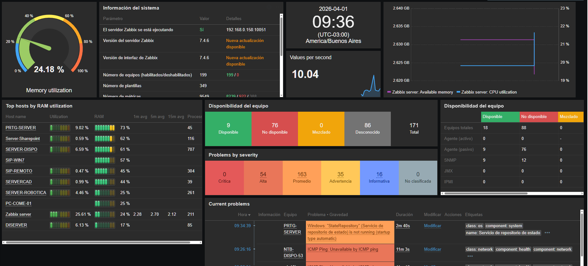
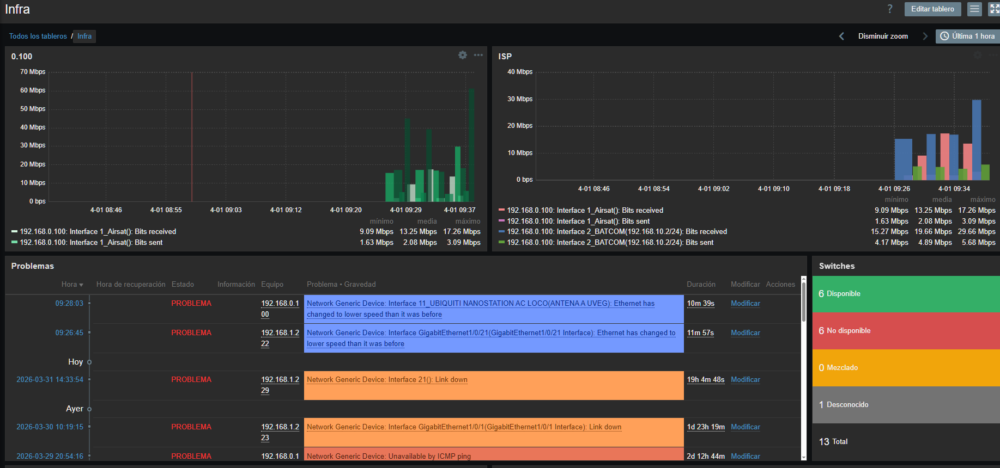
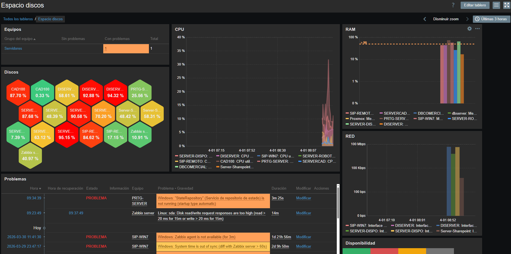
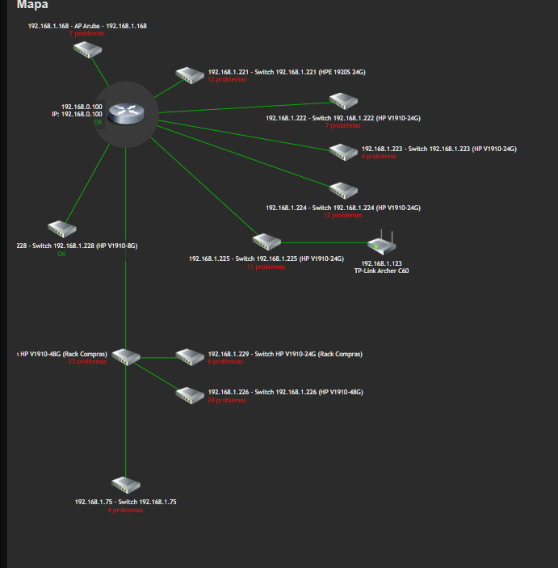
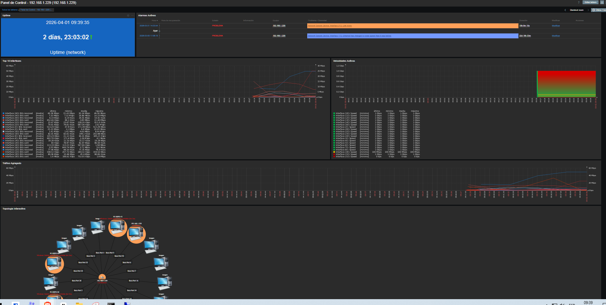
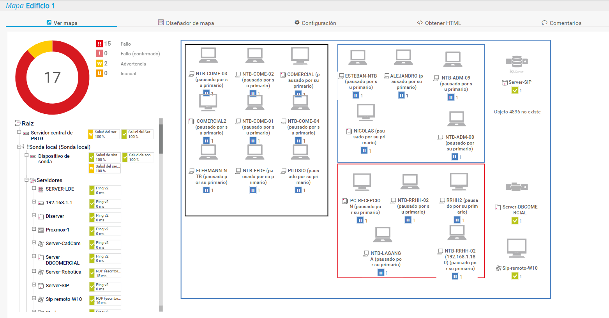
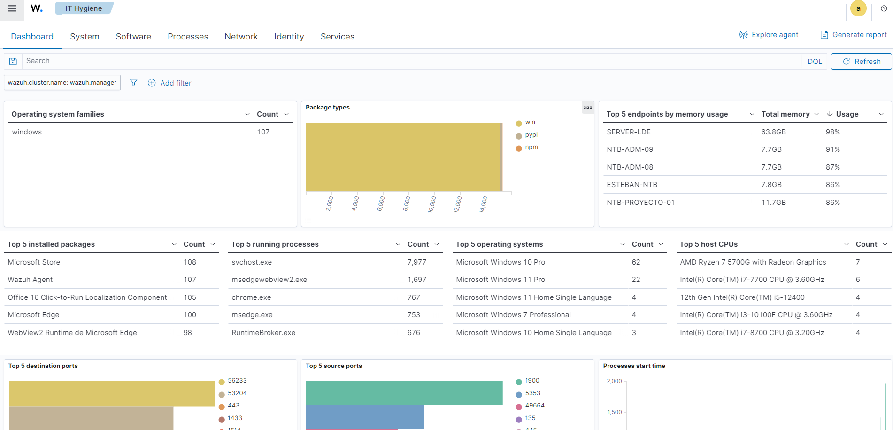

Procedimiento de Requisitos y Monitorización de Servicios de Red
1 OBJETIVO
Describir cómo se definen y acuerdan los requisitos de los servicios de red y cómo se monitorea su calidad y disponibilidad según la MC532-IT-1. La gestión de equipos, VLAN y Wi-Fi sigue el P527-IT-1; la revisión de alertas de seguridad, el P524-IT-1 (F524-IT-2).
2 RESPONSABLES
| Rol | Tareas |
|---|---|
| Administrador de IT (Emiliano Ferrari) |
|
| IT Manager / RSI (Germán Montalbetti) |
|
3 REQUISITOS AL CONTRATAR O CAMBIAR UN SERVICIO
| Paso | Responsable | Registro |
|---|---|---|
| 1. Definir uso, información que transporta, capacidad, disponibilidad (según M528-IT-1), seguridad (cifrado, firewall, protección contra denegación de servicio) y redundancia | Germán Montalbetti | F527-IT-1 (Servicios de red) |
| 2. Evaluar al proveedor según P133-IT-1 | Germán Montalbetti | F133-IT-1 |
| 3. Acordar los requisitos por escrito (contrato, nota de pedido, términos y condiciones) y guardar el documento en SharePoint IT | Germán Montalbetti | Documento del acuerdo |
| 4. Implementar el cambio y agregar el servicio al monitoreo de Zabbix | Emiliano Ferrari / Armanet | F521-IT-2 |
4 MONITOREO CONTINUO CON ZABBIX
| Qué se mide | Alerta propuesta [Propuesta] | Aviso |
|---|---|---|
| Disponibilidad (ping) de los enlaces Airsat y Batcom | Sin respuesta durante 2 minutos | Correo o Teams a Emiliano Ferrari y Germán Montalbetti [Propuesta] |
| Latencia de los enlaces | Mayor a 100 ms durante 5 minutos | Ídem |
| Tráfico de las bocas del MikroTik y de los switches | Uso mayor al 80 % durante 15 minutos | Ídem |
| Estado de switches, bocas y velocidad de enlace | Equipo caído o boca que baja de 1 Gb a 100 Mb | Ídem |
| Servidores (disponibilidad y disco) | Disco con más del 85 % ocupado | Ídem |
| Disponibilidad de sip4.prodismo.com [Confirmar] | Sin respuesta durante 5 minutos | Ídem |
- Hoy Zabbix avisa a Emiliano Ferrari en su consola y los umbrales no están documentados: configurar los umbrales y el envío por correo o Teams y registrarlo en el F521-IT-2 (NC-2026-47).
- Conservar el historial de Zabbix al menos 13 meses para poder comparar con el año anterior [Propuesta; hoy valor por defecto].
5 REVISIÓN MENSUAL
| Paso | Responsable | Registro |
|---|---|---|
| 1. En los primeros días del mes, exportar de Zabbix el informe del mes anterior: disponibilidad de cada enlace, cortes y conmutaciones, latencia y uso pico | Emiliano Ferrari | Captura en SharePoint IT |
| 2. Comparar con los acuerdos (respuesta del proveedor ante cortes) y con la capacidad contratada | Emiliano Ferrari | F527-IT-1 (Revisión mensual) |
| 3. Si un proveedor no cumplió o hay saturación, definir la acción (reclamo, ampliación, cambio) e informar al RSI | Emiliano Ferrari / Germán Montalbetti | F527-IT-1 · F521-IT-2 |
| 4. Las alertas de seguridad (equipos nuevos, eventos del MikroTik) se revisan según P524-IT-1 | Emiliano Ferrari | F524-IT-2 |
| 5. Si una falla es un incidente de seguridad, se sigue el P162-IT-1 | Emiliano Ferrari | F162-IT-1 |
6 PRUEBA DE CONMUTACIÓN
- Una vez al año (V-19), fuera de horario: desconectar el enlace Airsat, verificar que el MikroTik pasa a Batcom, que la navegación, la VPN y SIP4.0 funcionan, medir el tiempo de corte y volver al enlace principal.
- Registrar fecha, tiempo y resultado en el F163-IT-1 (Ejercicios y pruebas). La prueba de inicios de 2026 se carga solo si se consigue evidencia con su fecha real.
7 HERRAMIENTAS
- Zabbix: disponibilidad, latencia, tráfico, estado de bocas y equipos, mapa de la red.
- Wazuh: eventos de seguridad de equipos y servidores (MC524-IT-1).
- Firewall MikroTik administrado por Armanet.
Capturas reales de los tableros:
-

Estado de servers y alertas por equipo
Visibilidad de métricas críticas y estado de cada servidor
-

Tráfico de red
Volumen de datos, picos de uso y análisis de rendimiento
-

Espacio de los discos
Capacidad ocupada, tendencias y umbrales críticos
-

Mapa de la red
Topología completa generada dinámicamente (automatizado por script)
-

Mapa, tiempo encendido, alertas de bocas, velocidades de transferencia y enlace (10 100 1000)
Análisis de interfaces, estado y rendimiento por puerto
-

Edificio 1, separado por oficinas
Distribución por áreas, conectividad y dispositivos por sector
-

Wazuh
Análisis de malware, registros y vulnerabilidades
8 REGISTROS
| Registro | Retención |
|---|---|
| F527-IT-1 hojas "Servicios de red" y "Revisión mensual", con las capturas de Zabbix | 3 años |
| Documentos de los acuerdos con proveedores | Mientras dure el contrato y 3 años más |
| F524-IT-2 (alertas) · F163-IT-1 (prueba de conmutación) | Según P524-IT-1 y P163-IT-1 |
9 REVISIONES DEL DOCUMENTO
| Rev. N° | Fecha | Descripción |
|---|---|---|
| 0 | 25/8/2025 | Primera emisión del documento |
| 1 | 31/3/2026 | Revisión completa del documento |
| 2 | 24/11/2026 | Nuevo título. Requisitos y acuerdos al contratar servicios de red; monitoreo real con Zabbix con umbrales propuestos; revisión mensual en el F527-IT-1; prueba de conmutación. Se dan de baja los formularios F532-IT-4 y F532-IT-5 (Microsoft Forms, sin uso). Se quitan SIEM, IDS/IPS, PRTG, pfSense, OPNsense, el diagrama de flujo y las revisiones diarias y semanales que no se hacían. |